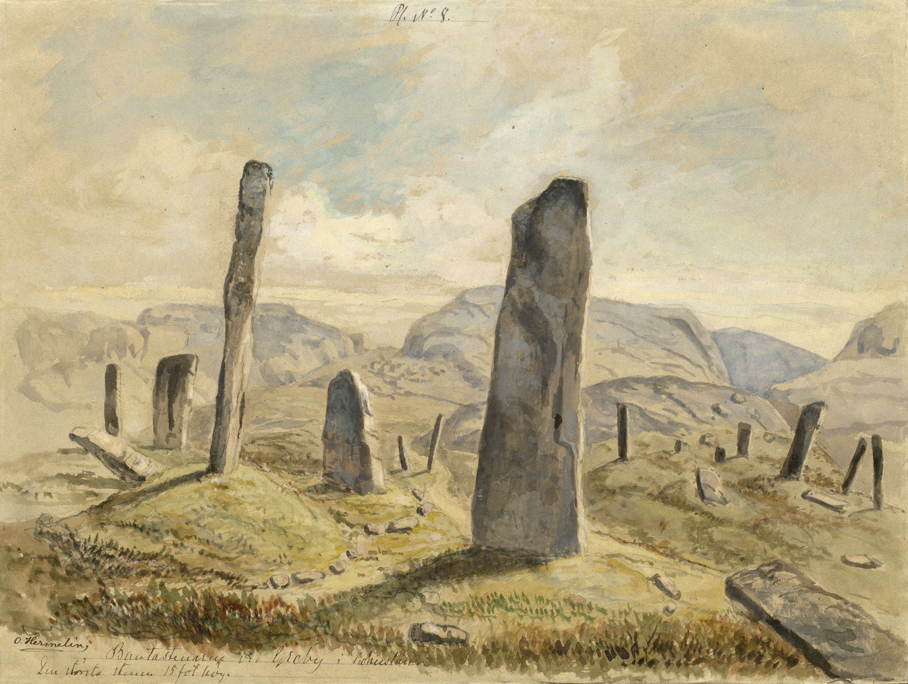

A setting inspired by the TV show Britannia, which was in turn inspired the historical events surrounding the Roman invasion of the British Isles.
I am not a historian, and nothing about this is meant to be historically accurate. I’m just a dude on the internet who likes hex crawlin’ in ancient Albion, where the Romans are demons and the leader of the Druids is David Bowie.
Under the banners of General Aulus Plautius, the Romans have returned to Britannia to complete the conquest attempted by Julius Caesar nearly a century ago. A war machine comprised of peoples and gods from the corners of the world, their arrival is a crawling chaos crashing over the land.
As one prophetic druid put it, “the stones upon which Time itself stands… those stones have shifted. They’re collapsing. Crushing centuries, annihilating pantheons… the ghosts of all our dead churned into a whirlwind, incinerated in a single flash…and when it’s gone….”
Player characters
Starter loot
| 1 HP | 2 HP | 3 HP | 4 HP | 5 HP | 6 HP | |
|---|---|---|---|---|---|---|
| 3-9 | Great sword (d8) Sling (d4) Arcanum |
Bow and arrow (d6) 10 Silver pieces Arcanum |
Spear (d6) Shield (1) Arcanum |
Farmer knife (d6) Horse Sling (d4) |
Bow and arrow (d6) Horse Spear (d6) |
War axe (d8) Shield (1) Arcanum |
| 10 | Spear (d6) Shield Arcanum |
Shortsword (d6) Bow and arrow (d6) Arcanum |
Walking stick (d6) Incense Arcanum |
Sickle (d6) Hour glass Arcanum |
Farmer knife (d6) Horse Arcanum |
Gladius (d6) Legionary shield (2) Arcanum |
| 11 | Great axe (d8) Battle shield (2) Triple pipes |
Sickle (d6) Hunting knife (d6) Arcanum |
Shortsword (d6) Grappling hook War horn |
Great sword (d8) 40 Silver Arcanum |
Bow and arrow (d6) 1 gold piece Horse and chariot |
Hierophant staff (d6) Quill and paper Arcanum |
| 12 | Spear (d6) Legionary shield (2) Nazar |
Bow and arrow (d6) Hunting knife (d6) Arcanum |
War axe (d8) Bow and Arrow Horse and wagon |
Gladius (d6) Bow and Arrow (d6) Gladius (d6) |
Dagger (d6) Horse Vial of poison |
Spear (d6) Shield (1) Arcanum |
| 13 | Hunting knife (d6) Warhammer (d8) Fine leather armor (2) |
Spear (d6) Dagger (d6) Horse and chariot |
Gladius (d6) Legionary shield (2) |
Spear (d6) Legionary Shield (2) Arcanum |
Great sword (d8) Bow and arrow (d6) Leather armor (1) |
Sickle (d6) Walking stick (d6) Hour glass |
| 14 | Spear (d6) Legionary shield (2) Fine leather armor (2) |
Bow and arrow (d6) Incense Arcanum |
Warhammer (d8) Wolf pelt armor (1) War horn |
Shortsword (d6) Shortsword (d6) Arcanum |
Hunting knife (d6) 30 Silver Triple pipes |
Spear (d6) Shield (1) Horse |
| 15 | Walking staff (d6) Bow and arrow (d6) Hunting knife (d6) |
Sling (d4) Farmer knife (d6) 10 silver |
Greatsword (d8) War horn Arcanum |
Hunting knife (d6) Grapling hook Healing tea (heals d4 Strength) |
Shortsword (d6) Battle shield (2) Horse |
Axe (d6) Battle shield (2) Dagger (d6) |
| 16 | Warhammer (d8) Bow and arrow (d6) Arcanum |
War axe (d8) Wof pelt armor (1) Horse and cart |
Spear (d6) Great sword (d8) Fine leather armor (2) |
Bow and armor (d6) Shortsword (d6) Horse |
Farmer knife (d6) Walking staff (d6) Arcanum |
Great sword (d8) War axe (d8) Arcanum |
| 17 | Bow and arrow (d6) Grappling hook Hour glass |
Shortsword (d6) Dagger (d6) Arcanum |
Hunting knife (d6) Silver torc |
Spear (d6) Battle shield (2) Hunting knife |
Walking stick (d6) Arcanum Arcanum |
Bow and arrow (d6) 10 gold pieces Gold torc |
| 18 | Farmer knife (d6) Sickle (d6) 30 Silver |
Bow and arrow (d6) Fine leather armor (2) Arcanum |
Walking staff (d6) Incense Triple pipes |
Great axe (d8) Fine leather armor (2) Donkey |
Dagger (d6) Farmer knife (d6) Bow and arrow (d6) |
Sling (d4) 10 Silver pieces Bronze torc |
Starting arcana
| Roll | Arcana | Description |
|---|---|---|
| 1 | Cauldron of Murias | A cauldron of bottomless plenty. Refresh 10 Supply every morning. Once per day, make a Will Save and attempt to pull from the cauldron any item that your heart desires. If you fail the Save you are pulled into the Otherworld. |
| 2 | Spear of Gorias | 2d6 Damage. Engravings of a gold eagle flank the blade of the spear. Enemies you pierce are struck with lightning that pulses from the spear. |
| 3 | Sword of Finias | 2d6 Damage. On your command, this sword can illuminate at the level of a bright torch. While this sword is on your person, you never decrement more than 1 Supply per Turn. |
| 4 | Triple pipes | Playing these pipes allows you to summon an animal for 1 day. The animal is friendly to you, and understands your intentions to a reasonable level. The animal will protect you if asked, but the Referee may ask for Will Saves when the animal is taking damage to see if they run away. |
| 5 | Egg of protection | A green gemstone, carved and polished into the shape of a chicken egg. Grasp the egg to create an invisible circle of protection that surrounds you completely in the shape of a large egg. The protected area is big enough for 3 people, standing close together. Nothing you do not allow can pass the boundaries of the egg, including rain, smoke, projectiles, or people. If a determined attacker is attempting to enter, or an extremely large object falls on the protective barrier, the Referre may call for a Will save. On failure, the egg shatters, rendered unusable. |
| 6 | Seeking snake | A pet snake about 2.5 feet long with 1 HP. Once per turn, you may transform the snake into a seeking arrow with a fanged arrow head that deals d8 damage, ignoring HP. |
| 7 | Oak carved spoon | Dip the spoon into a natural body of water, drink, and receive d6 healing to each of your Ability scores. |
| 8 | Horseshoe | Keeping this on your person gives +2 Armor. It also makes you a friend of horses, easily able to find and tame wild horeses. |
| 9 | Cloak of invisibility | Really rare. Yes, others can still hear you or see your foot prints. |
| 10 | Ochain of Conchobar | +3 Armor. A large shield that looks beat up, but is very sturdy. It will warn you of dangers ahead if you ask it. |
| 11 | Golden apple | The bearer of this apple can add +3 to any of their Ability scores. You can shift the Ability score to which this applies once per day. |
| 12 | Drowsy branch | A white branch dotted with silver leaves. Shaking the branch creates beautiful, soothing music, that will lull any nearby humanoids to sleep. |
| 13 | Seeing sticks | Cast these sticks and interpret the way they fall. You are immune to damage in your next combat encounter. |
| 14 | Hour glass | Once per day, you can move extremely fast for 2 Turns. |
| 15 | Black stone of Pessinus | A smooth black stone that fits in the palm of a hand. Once per day, you can fly into a rage that increases your Strength. Make 2 Attacks instead of 1, and your Attacks deal an additional d6 Damage. |
| 16 | Buck horn helmet | Bronze and leather helmet with antlers. Gain an extra damage dice to your Spells. |
| 17 | Bear skin cloak | Super warm and comfy. Once per Turn use your Action to shield someone from Damage. |
| 18 | Falcata | d12 Damage. Ignore Damage done to you this Turn if you roll above 9. |
| 19 | White oak bow | d12 Damage. If enemeies are in melee range, you can make an additional Attack. |
| 20 | Herb and resin incense | Once per day, you can light this incense, and everyone around you partakes of the benefits. For the next 10 Turns all your Rolls are Enhanced. |